NS Notes · Hands-on
แนวทางวิเคราะห์ข้อมูล metabolomics ด้วย MetaboAnalyst 6.0 · โดย Nattapon Simanon
บทความนี้สรุปขั้นตอนการวิเคราะห์ข้อมูล metabolomics เชิงชีวสารสนเทศศาสตร์ (bioinformatics) ตั้งแต่การแปลง identifier ของสารเมตาบอไลต์ (metabolite) ไปจนถึง enrichment, pathway และ network analysis โดยใช้ MetaboAnalyst 6.0 เป็นเครื่องมือหลัก เหมาะสำหรับผู้ที่มีรายการ metabolite อยู่แล้วและต้องการต่อยอดไปสู่การตีความเชิงชีววิทยา
⬇ ดาวน์โหลดสไลด์ฉบับเต็ม (PDF) 44 หน้าHighlighted Sections
ก่อนเริ่มวิเคราะห์ ควรเข้าใจก่อนว่าข้อมูล metabolomics ที่เรามีมาจากแพลตฟอร์มแบบไหน (MS หรือ NMR), เป็นแบบ targeted หรือ untargeted, และเป็นการวิเคราะห์เชิงคุณภาพหรือปริมาณ สิ่งเหล่านี้กำหนดว่าเราจะนำข้อมูลเข้าสู่ขั้นตอนถัดไปได้อย่างไร
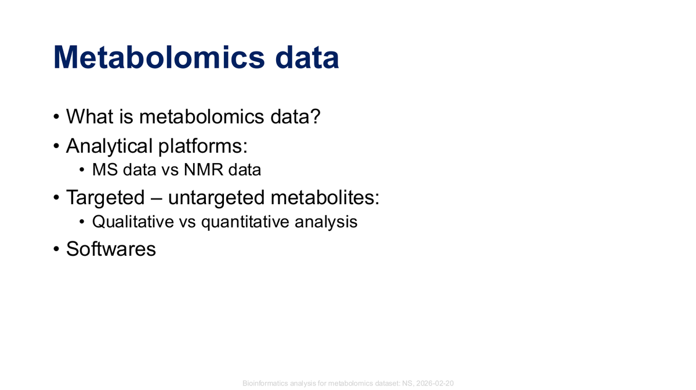
ประเด็นสำคัญของข้อมูล metabolomics: แพลตฟอร์มการวิเคราะห์ (MS หรือ NMR), targeted หรือ untargeted และซอฟต์แวร์ที่เกี่ยวข้อง
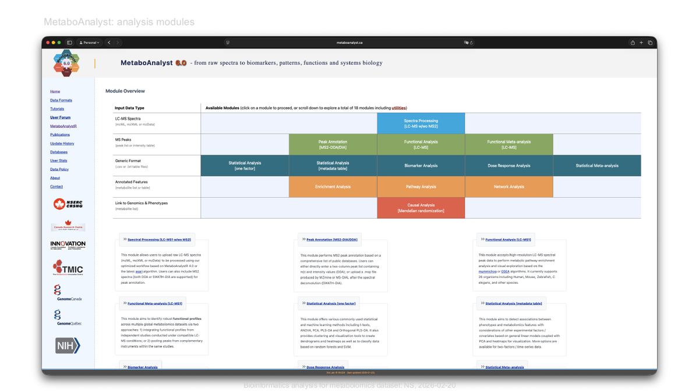
MetaboAnalyst 6.0 มีโมดูลวิเคราะห์หลากหลาย จัดกลุ่มตามชนิดข้อมูลนำเข้า โดยในบทความนี้เราจะโฟกัสที่กลุ่ม Annotated Features ได้แก่ Enrichment, Pathway และ Network Analysis
ก่อนทำ enrichment หรือ pathway analysis จำเป็นต้อง "แปลง หรือ convert" ชื่อสารเมตาบอไลต์ให้อยู่ในรูป identifier มาตรฐาน (เช่น KEGG, HMDB, PubChem) เพื่อให้จับคู่กับฐานข้อมูลได้ถูกต้อง
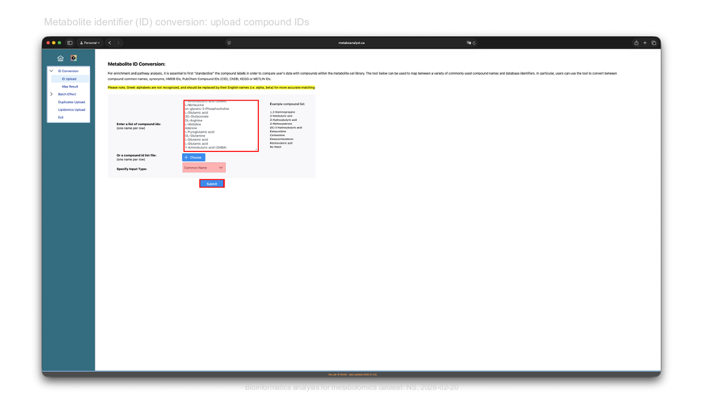
ใส่รายชื่อสารเมตาบอไลต์ (หนึ่งชื่อต่อบรรทัด) เลือก input type ให้ถูกต้อง แล้วกด Submit
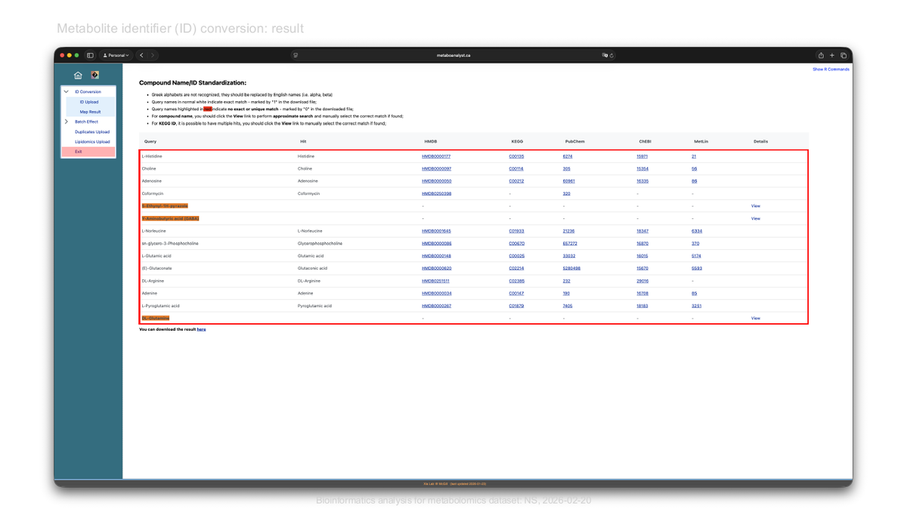
ผลลัพธ์จะจับคู่ชื่อสารกับ identifier ในหลายฐานข้อมูล แถวที่ถูกไฮไลต์คือรายการที่ไม่พบ exact match ต้องกด View เพื่อเลือกด้วยตนเอง (ซึ่งอาจไม่มีข้อมูลในฐานข้อมูลได้)
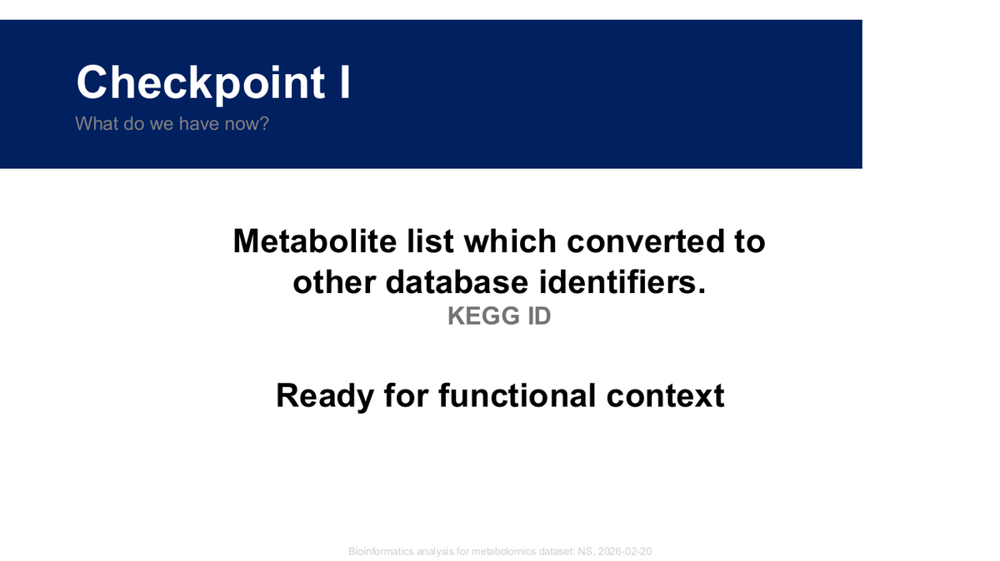
Checkpoint I: ตอนนี้เรามีรายการ metabolite ที่แปลงเป็น identifier มาตรฐาน (เช่น KEGG ID) พร้อมสำหรับการวิเคราะห์เชิงหน้าที่ในขั้นต่อไป
Enrichment analysis ช่วยระบุว่ากลุ่มของ metabolite ในข้อมูลของเรามีความสัมพันธ์กับ metabolite set ใดอย่างมีนัยสำคัญ (เช่น pathway, chemical class หรือ disease signature)
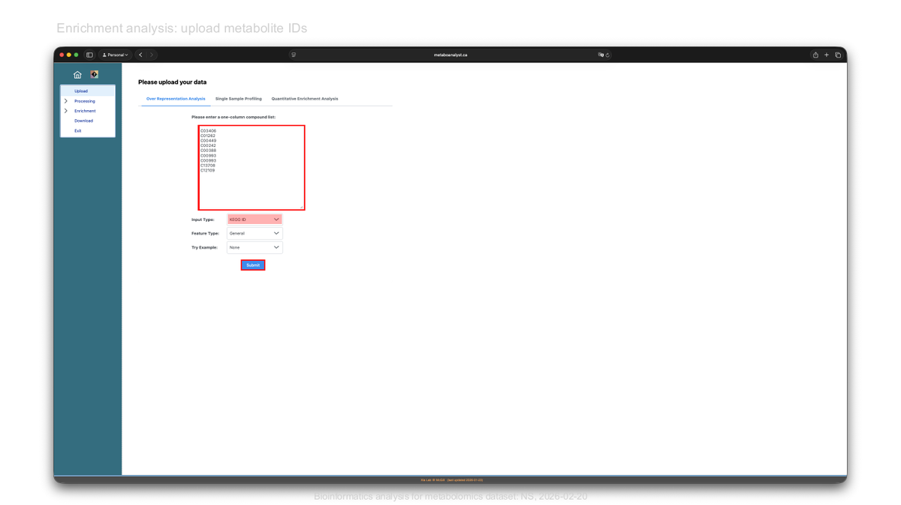
ใส่รายการ compound แบบคอลัมน์เดียว เลือก input type (เช่น KEGG ID) แล้ว Submit
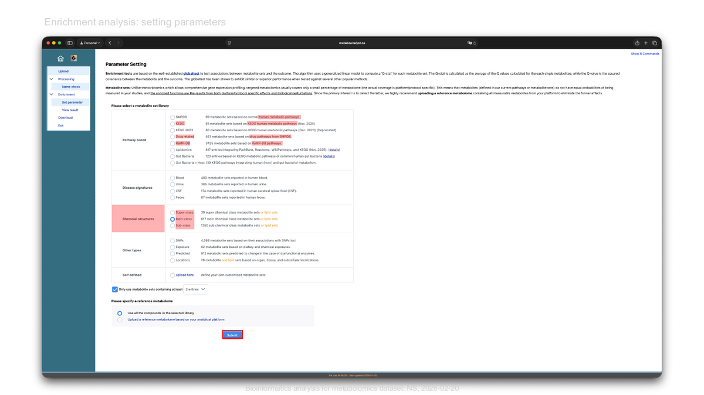
เลือก metabolite set library ให้เหมาะกับความต้องการ เช่น pathway-based, disease signature หรือ chemical structures และกำหนด reference metabolome หากต้องการ
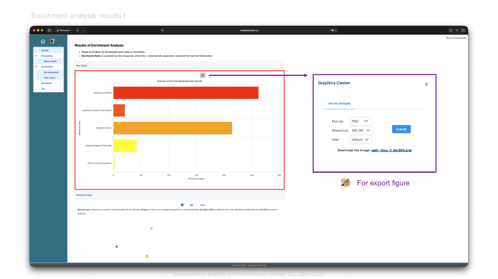
ผลลัพธ์แสดงเป็น bar chart ของ enrichment ratio โดยแท่งสีเข้มคือ metabolite set ที่ enrich มากที่สุด สามารถ export เป็นภาพความละเอียดสูงได้จาก Graphics Center
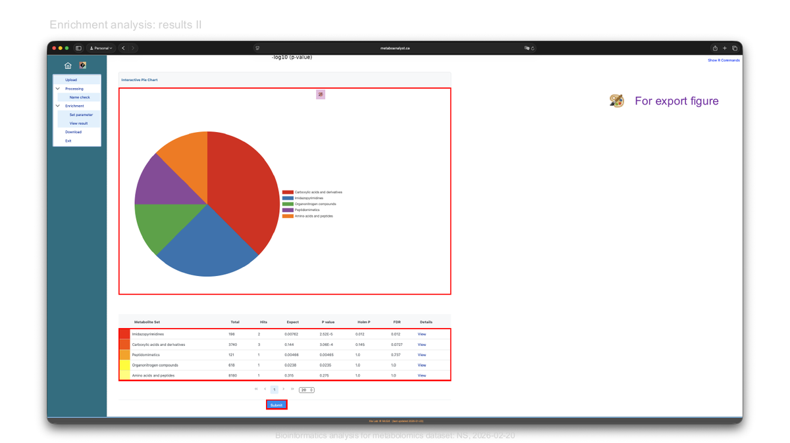
อีกมุมมองหนึ่งเป็น pie chart พร้อมตารางสรุปค่า p-value, Holm P และ FDR ของแต่ละ metabolite set
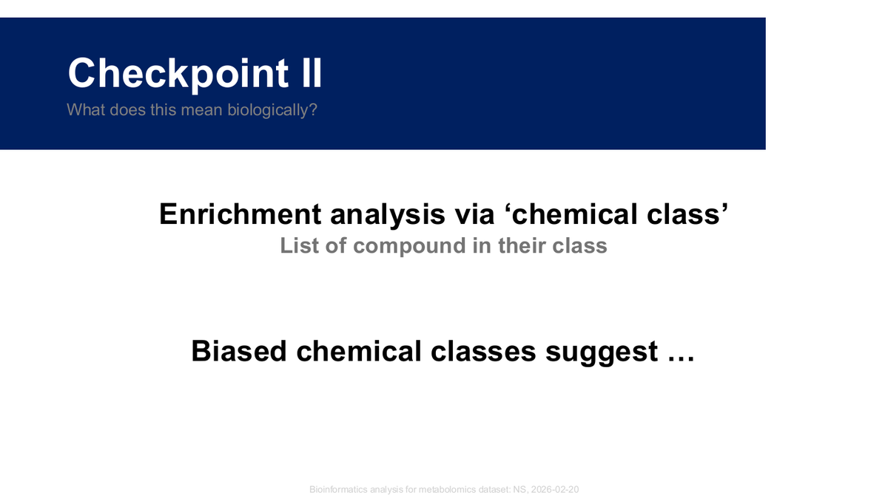
Checkpoint II: เมื่อ chemical class บางกลุ่มถูก enrich อย่างมีนัยสำคัญ ให้ตั้งคำถามว่าสิ่งนี้สื่อความหมายเชิงชีววิทยาอย่างไร
Pathway analysis ผสาน enrichment analysis เข้ากับ pathway topology เพื่อประเมินทั้ง นัยสำคัญและ "impact" ของ metabolite ต่อ pathway นั้น ๆ
ใส่ compound list แล้วเลือกรูปแบบของ input type (เช่น KEGG ID)
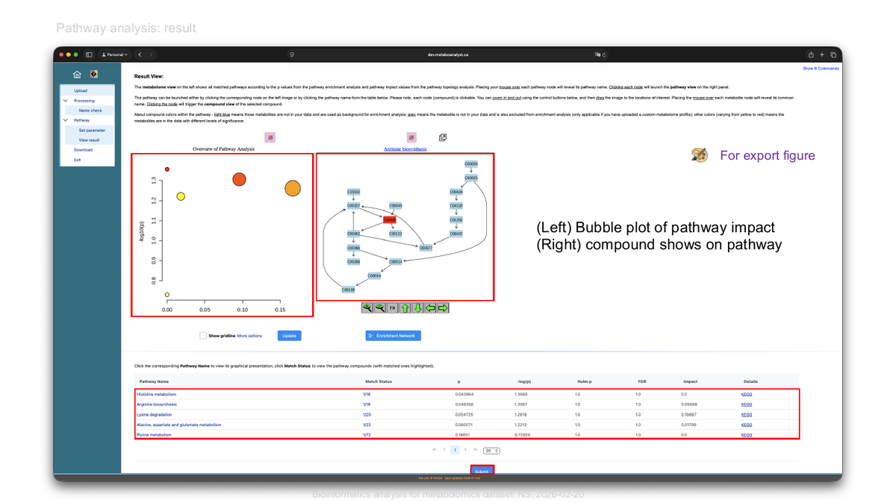
(ซ้าย) bubble plot ของ pathway impact เทียบกับ −log(p) — ยิ่งอยู่ขวาบนและวงใหญ่ ยิ่งสำคัญ (ขวา) มุมมอง pathway ที่แสดงตำแหน่งของ compound ใน pathway diagram
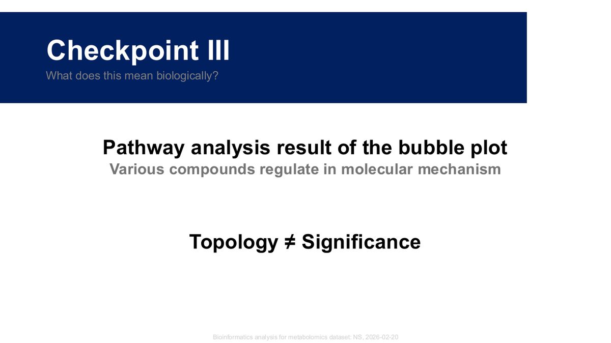
Checkpoint III: ค่า topology (impact) กับ significance (p-value) เป็นคนละมิติกัน pathway ที่ impact สูงอาจไม่ได้มีนัยสำคัญทางสถิติเสมอไป อาจต้องตีความควบคู่กัน
Network analysis สร้างเครือข่ายความสัมพันธ์ระหว่าง metabolite กับ gene หรือ metabolite อื่น ๆ เพื่อสำรวจความเชื่อมโยงเชิงหน้าที่ในภาพที่กว้างขึ้น
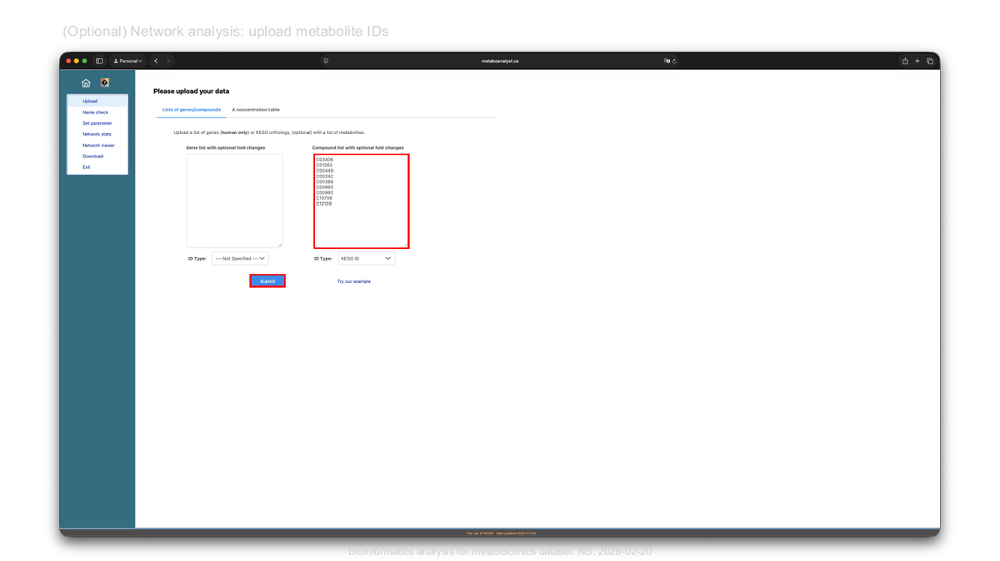
อัปโหลดรายการ compound (และรายการ gene หากมี) เพื่อสร้างเครือข่าย
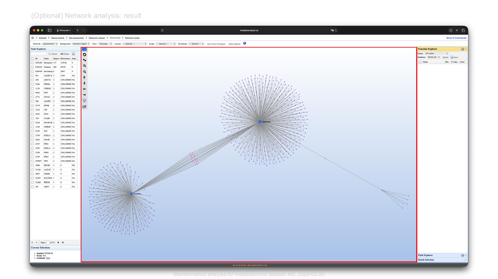
เครือข่ายที่ได้แสดง node ของ metabolite (เช่น histamine, guanine) เชื่อมกับ gene ที่เกี่ยวข้อง สามารถปรับ layout, กรองด้วย degree/betweenness และ export เป็น SIF ไปใช้ต่อใน Cytoscape ได้
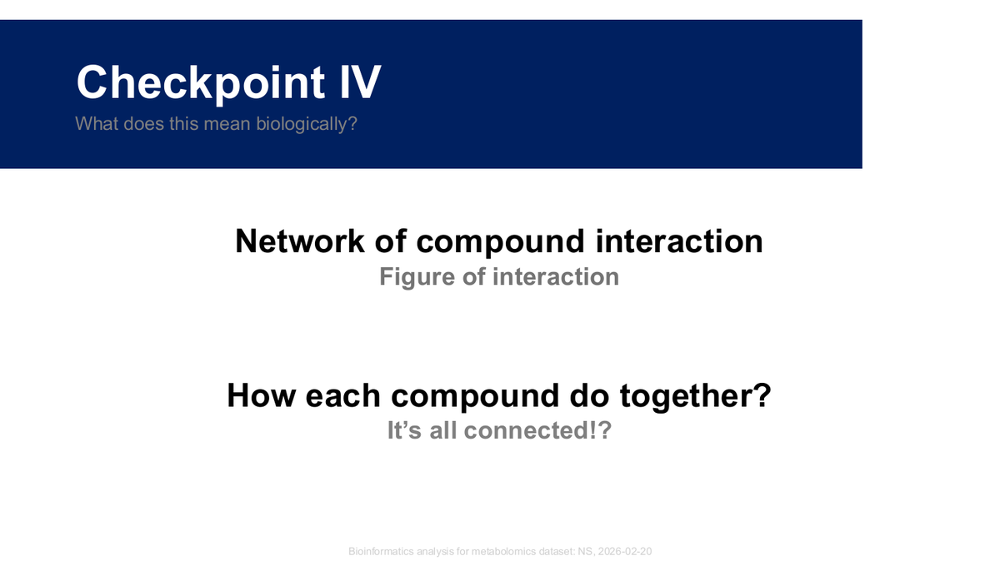
Checkpoint IV: เครือข่ายช่วยให้เห็นว่า compound แต่ละตัวทำงานร่วมกัน อย่างไร แต่ต้องระวังการตีความ "ทุกอย่างเชื่อมโยงกัน" ให้กลับไปถามเสมอว่ามันหมายความว่าอะไรเชิงชีววิทยา
STITCH เป็นฐานข้อมูล chemical–protein interaction ที่ช่วยเสริมข้อมูลว่าสารประกอบของเรา มีปฏิสัมพันธ์กับโปรตีนหรือสารอื่นอย่างไร
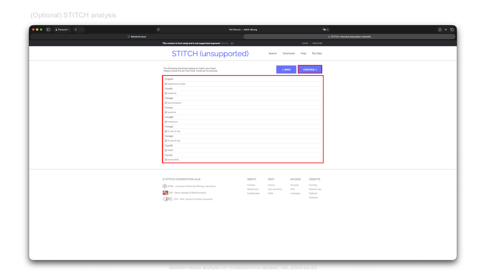
วางรายชื่อสารประกอบ (multiple names) แล้วให้ระบบ auto-detect organism ก่อนค้นหา
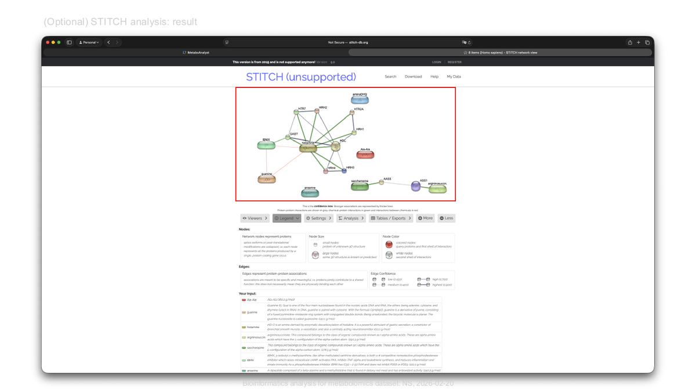
ผลลัพธ์เป็นเครือข่าย confidence view : เส้นหนาแสดงความสัมพันธ์ที่แข็งแรงกว่า สีเขียวคือ chemical–protein, สีแดงคือ chemical–chemical และสีเทาคือ protein–protein
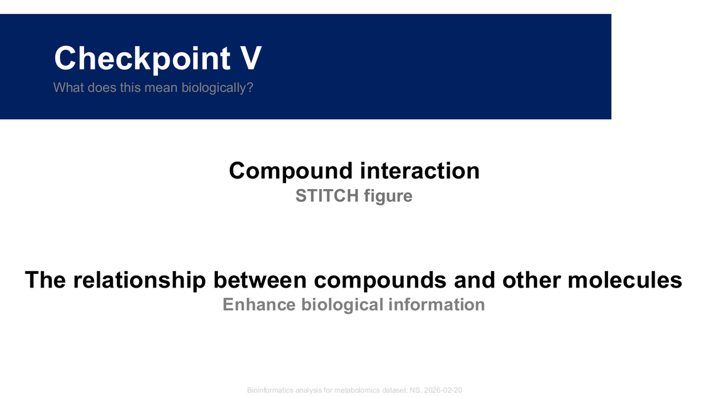
Checkpoint V: ความสัมพันธ์ระหว่าง compound กับโมเลกุลอื่น ๆ ช่วยเพิ่มมิติข้อมูลเชิงชีววิทยา : เป็นก้าวสุดท้ายที่เชื่อมผลการวิเคราะห์กลับสู่การตีความ
workflow ตั้งแต่ ID conversion → enrichment → pathway → network → STITCH ช่วยพาเราจากรายการ metabolite ดิบ ไปสู่การตีความเชิงชีววิทยาอย่างเป็นระบบ โดยแต่ละ checkpoint คือจุดที่ควรหยุดถามว่า "ผลลัพธ์นี้หมายความว่าอะไร" ก่อนเดินหน้าต่อ หากต้องการรายละเอียดครบทุกหน้า สามารถดาวน์โหลดสไลด์ฉบับเต็มที่ลิงก์ด้านบน